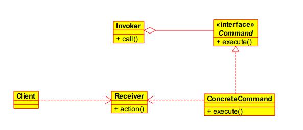

命令模式
文章目录
命令模式是将“请求”封装为对象，我们称之为命令对象，一个命令对象通过绑定特定的一组动作来封装请求。为达到这一目的，命令对象将动作和动作的执行者（即命令的接收者）包进对象中，并暴露出一个execute()方法，当此方法调用的时候，接收者就执行这些动作。命令模式是一种对象行为型模式，其别名为动作(Action)模式或事务(Transaction)模式。
在软件设计中，我们经常需要向某些对象发送请求，但是并不知道请求的接收者是谁，也不知道被请求的操作是哪个，我们只需在程序运行时指定具体的请求接收者即可。此时，可以使用命令模式来进行设计，使得请求发送者与请求接收者消除彼此之间的耦合，让对象之间的调用关系更加灵活。
命令模式可以对发送者和接收者完全解耦，发送者与接收者之间没有直接引用关系，发送请求的对象只需要知道如何发送请求，而不必知道如何完成请求。
命令模式还可以支持撤销(Undo)和恢复(Redo)操作，我们只需要将上一次的状态记录下来，并且添加两个接口undo(),redo()。
结构

Command: 抽象命令类ConcreteCommand: 具体命令类Invoker: 调用者Receiver: 接收者Client:客户类
有些人说可以不需要
Receiver，直接将动作在ConcreteCommand里面定义，这样也是可以的，但是增加了Invoker和Receiver的耦合度。
上图是一种基本的命令模式，通过将Receiver里的动作封装在ConcreteCommand里，即使Invoker不知道Command的实现类里的具体细节，也能实现一组操作，并且这组操作是可以替换的，通过不同Command的实现类来完成这个目的。通过这种方式实现了Invoker和Receiver之间的解耦。
同时，命令模式也有许多的扩展，比如：队列请求、日志请求等。
队列请求
命令模式将运算块打包（一个接受者和一组动作），然后将它放入一个工作队列中。当线程池中的线程空闲时就会从工作队列中取出下一个命令对象，并调用它的execute()方法，等待这个调用完成，然后将此命令对象丢弃，再取出下一个命令对象。
在这里，工作队列和进行计算的对象（Receiver）之间是完全解耦的。工作队列完全不知道命令对象具体执行哪些工作，只需要取出命令对象并执行
execute()方法。
这种情景的应用可以说很多，比如：Android中的Handler、AsyncTask、Java中的线程池等都是运用了这种模式。
优点
- 降低系统的耦合度。
- 新的命令可以很容易地加入到系统中。
- 可以比较容易地设计一个命令队列和宏命令（组合命令）。
- 可以方便地实现对请求的Undo和Redo。
缺点
- 使用命令模式可能会导致某些系统有过多的具体命令类 。因为针对每一个命令都需要设计一个具体命令类，因此某些系统可能需要大量具体命令类，这将影响命令模式的使用。
使用场景
- 系统需要将请求调用者和请求接收者解耦，使得调用者和接收者不直接交互。
- 系统需要在不同的时间指定请求、将请求排队和执行请求。
- 系统需要支持命令的撤销(Undo)操作和恢复(Redo)操作。
- 系统需要将一组操作组合在一起，即支持宏命令